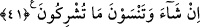
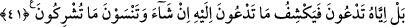

KİME YALVARIRSINIZ?
40. De ki: Ne dersiniz; size Allah’ın azabı gelse veya o kıyamet gelip çatıverse
size, Allah’tan başkasına mı yalvarırsınız? Doğru sözlü iseniz (söyleyin bakalım)!
41. Bilâkis yalnız Allah’a yalvarırsınız. O da (kaldırılması için) kendisine
yalvardığınız belâyı dilerse kaldırır; ve siz ortak koştuğunuz şeyleri unutursunuz.
Ey Muhammed! Mekke halkına “de ki:” “
” ifadesi, kalp ile veya gözle görülen
bir şeyden haber sormaktır. Fakat bu ifadeden maksat ilgili olduğu şey hakkında bilgi
sahibi olmaya çalışmaktır. Yani “Bana haber verin” anlamınadır. Dolayısıyla haber
vermenin sebebi olan ilim ve görme, haber vermeden mecaz olarak kullanılmıştır.
Muhatabı susturmak ve ikrara mecbur etmek için kullanılan istifham, istenen tüm
özellikleri toplayan kimseye emretmek yerine mecaz olarak kullanılmıştır.
Önceki ümmetlerin başına geldiği gibi dünyada “size Allah’ın azabı gelse, ya da”
uhrevî azabı da içine alan “o kıyamet saati gelip çatsa Allah’tan başkasına mı
yalvarırsınız.” Bu ifade, haber sormanın sebebini ve susturmanın maksadını ortaya
koymaktadır. Kıyametin kopacağı vakte “saât” denmiştir. Çünkü o kendisinde pek büyük
işlerin vuku bulacağı kısa bir zamandır.
“Doğru sözlü iseniz söyleyin” Yani, putlarınızın gerçek ilah olduğu iddianızda
haklıysanız, bana haber verin; eğer Allah’ın azabı size gelse, yine Allah’dan başkasına
mı dua edersiniz? Çünkü önceki iddialarında doğru olmaları, bu durumda iken de
Allah’dan başkasına dua etmelerini gerektirir.
41. Bilâkis yalnız Allah’a yalvarırsınız. O da (kaldırılması için) kendisine
yalvardığınız belâyı dilerse kaldırır; ve siz ortak koştuğunuz şeyleri unutursunuz.
“Hayır, yalnız O’na yalvarırsınız.” Bu cümle, önceki ayetteki menfi cümleye bağlı
bir cümledir. Sanki şöyle denilmiştir. Allah’dan başkasına değil sadece O’na
yalvarırsınız.
“O da dilerse” kaldırılmasını “istediğiniz belayı” duânızın ardından “kaldırır.” Bu
cümle bir önceki cümleye bağlıdır. Duanın kabülü, Allah’ın dilemesine bağlıdır. Allah